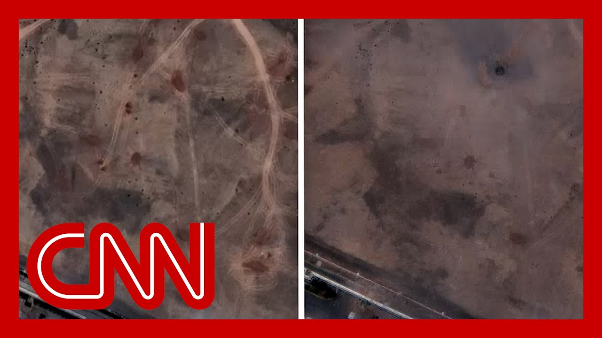

【2026-05-26 CNN新闻｜以色列情报与美国一致：伊朗核设施核心部件未被摧毁】
Summary: Breaking news on Israel's assessment of Iran's nuclear facilities reveals U.S. strikes did not destroy Iran's nuclear program, only setting it back temporarily, with Israeli intelligence confirming limited damage at Fordo facility and estimating a 2-year setback, while warning of further strikes if Iran rebuilds. Experts caution military strikes cannot fully eliminate Iran's nuclear capabilities.
摘要： 突发新闻：以色列对伊朗核设施的评估显示，美国空袭并未摧毁伊朗核计划，仅暂时延缓其进展。以色列情报证实福尔多核设施受损有限，估计延缓2年，并警告若伊朗重建将再次打击。专家警告军事打击无法完全消除伊朗核能力。

⏱️ Estimated Reading Time: 14 min
📚 六级生词 📚 雅思生词 📚 托福生词 📚 专八生词 📚 SAT生词 📚 考研生词 📚 GRE生词 📚 高考生词
So breaking news, we are just getting some new reporting on Israel's assessment of the st on Iran's nuclear facilities.
突发新闻，我们刚刚收到以色列对伊朗核设施评估的新报道。
This is crucial because the context here is, you know, CNN learning our Natasha Bertrand, reporting on that earl intelligence assessment, which found that the U.S. military strikes did not destroy Iran's nuclear program and likely only set it back for Jim Sciutto is OutFront in Washington with his new repor
这至关重要，因为背景是CNN的娜塔莎·伯特兰报道了早期情报评估，发现美军空袭并未摧毁伊朗核计划，可能仅暂时延缓。吉姆·席托在华盛顿带来新报道。
And, Jim, in the context of the firestorm around this report from the Pent what you're learning from Israel intelligence is so crucial.
吉姆，在围绕五角大楼报告的激烈争议中，你从以色列情报获得的信息非常关键。
What are you finding out?
你发现了什么？
A senior Israeli intelligence source tells me that Israel's own BDA or bomb damage assessment of the strikes, specifically on the Fordo underground nuclear facility, mi that that CNN is reporting from the Defense Intelligence Ag and that is that the damage from those strikes was limited and perhaps even less extensive than believed initially.
一名以色列高级情报人士告诉我，以色列自己对福尔多地下核设施的空袭损害评估（BDA）与美国国防情报局的CNN报道一致，即空袭造成的损害有限，可能比最初认为的更轻微。
So the Israeli assessment matching the U.S. assessment as we were reporting.
正如我们所报道的，以色列评估与美国评估一致。
Now, both the U.S. and Israel continue to gather intelligence.
目前，美国和以色列仍在收集情报。
And I've been told throughout that doing BDS takes time and it takes multiple sources, not just images from from the sk but also human intelligence, sig intercepts, etc..
我始终被告知，损害评估需要时间和多方情报来源，不仅是卫星图像，还包括人力情报、信号拦截等。
I will say this, though, that Aa I was told by this Israeli intelligence source that Israel's assessment is that the sum total of U.S. and Israeli strikes on those nuclear facilities set back Iran's nuclear program by two ye
但我要指出，以色列情报人士称，以方评估认为美以联合空袭使伊朗核计划倒退两年。
So going further than that, U.S. assessment of perhaps setting it back months.
这比美国评估的“延缓数月”更深远。
The other point I would note is that I've been told in this cont but also repeatedly by Israeli o that if Iran attempts to reconst or rebuild these damaged facilities, Israel will certainly strike aga
另一点是，以色列官员多次表示，若伊朗试图重建受损设施，以方必将再次打击。
Of course, the question is, would the U.S. do the same?
当然，问题是美国会这样做吗？
Right? The real question, and also, Jim I know that, you know, these could be different, different analyzes.
对吧？真正的问题在于，吉姆，这些可能是不同的分析。
But before the U.S. the Israeli government had alrea the prime minister had said that the Israeli strikes prior to Trump strikes had set the nuclear prog back 2 to 3 years.
但在美国行动前，以色列总理曾表示，特朗普空袭前的以方打击已使伊朗核计划倒退2至3年。
So if what you're saying, if that, that that would indicat I suppose, in some way that the strike may not have really had much of an impact at all?
那么你的说法是否意味着空袭可能根本未产生实质影响？
Un It's hard to connect those two, but it certainly raises that. It certainly raises that questio
很难将两者关联，但这确实引发了疑问。
All right. This is huge. Obviously hugely significant reporting from Jim Sciutto.
好的，这非常重要。吉姆·席托的报道显然意义重大。
And it matches what Natasha Bertrand is putting out here.
这与娜塔莎·伯特兰的报道一致。
Jim, from what you're learning. Well, I one thing I will say is, well, this the source said t and this is not inconsistent with what you'll hear from here, from U.S. intelligence officials, that bid in the words of this Israeli sou an art as opposed to a science.
吉姆，根据你的发现……我要说的是，消息人士称这与美情报官员的说法一致，即损害评估是“艺术而非科学”。
To some degree. Right.
在某种程度上，是的。
And we should not be so surprise by the limited nature of the dam because I've been told repeatedly for years that to completely destroy these you would likely need multiple s
我们不应对损害有限过于惊讶，因多年来我反复被告知，要彻底摧毁这些设施可能需要多次打击。
Even with the size of the weapon these bunker busters that were u were used multiple strikes and also a ground component, rig
即使使用大型掩体炸弹，也需要多次打击甚至地面部队配合。
You know, boots on the ground to to assess but also go into the areas that you couldn't reach from the
需要地面人员评估并进入空中打击无法覆盖的区域。
And that was I'm sure that was on the menu of options the president had.
我相信这是总统考虑过的选项之一。
But given the danger, it was not one that he that he chose to take.
但鉴于风险，他未选择该方案。
Jim Sciutto, thank you so much for significant new reporting there.
吉姆·席托，感谢你的重要新报道。
Let's go to Scott Roker, nuclear expert, vice president of the Nu Threat Initiative and retired Ar General James Spider Marks, former commanding general of the Intelligence Center.
接下来请核专家、核威胁倡议副主席斯科特·罗克，以及情报中心前指挥官、退役陆军上将詹姆斯·“蜘蛛”·马克斯。
So in that capacity, he's seen so many of these assessment
在此职位上，他见过许多此类评估。
So, Scott, you hear the Israelis, the bomb damage assessment, mirroring the reporting of the U initial assessment from the Pent that the U.S. strikes would have possibly set the program back by by months and did not obliterate it.
斯科特，你听到以色列的损害评估与五角大楼初步评估一致，即美国空袭可能仅延缓伊朗核计划数月，并未彻底摧毁。
Are you surprised by these findi and that the Israeli initial ass seems to support it?
这些发现以及以色列初步评估的支持是否令你惊讶？
Yeah, these reports are definitely concerning, but I would say it's still too early to know whether these strikes were succe from a military standpoint.
是的，这些报告确实令人担忧，但从军事角度看，现在判断空袭是否成功为时过早。
But I think it's important to take this, these reports in the context of what we heard from the vice p earlier this week, that the highly enriched uranium that Iran possesses was not, was not addressed in this attack
但重要的是结合副总统本周早先的说法来看这些报告——伊朗拥有的高浓缩铀在此次攻击中未被触及。
And so all the reports that we're heari are definitely concerning.
因此我们听到的所有报告都令人担忧。
and the highly enriched uranium is really important because that's the most difficul in getting a nuclear weapon.
高浓缩铀至关重要，因它是研制核武器最困难的环节。
the fact that that was not addre the attack is a big concern for
空袭未解决这点是一大隐忧。
but fundamentally, I don't think you can address this military or the, the Iranian nuclear program through military strikes.
但根本上，我认为无法通过军事打击解决伊朗核计划。
You can destroy equipment, but you can't take away that knowledge that know how, this the the Iranians have been working on nuclear issues for, you know,
你能摧毁设备，但无法抹去伊朗数十年来积累的核知识与技术。
It's multifaceted. It's a extensive program.
这是多层面的庞大计划。
So for me, the military solution never made sense from the start.
因此我认为军事手段从一开始就不合理。
General, you spent your military career as intelligence
将军，您的军旅生涯专注于情报工作。
So you've been part of these ass
您参与过此类评估。
How do you see it?
您如何看待？
Well, you know, fundamentally wh intelligence, you're there's intelligence that you sh
本质上，情报工作中有些信息可公开，有些则不能。
Now, clearly we have an arrangem that we call the Five Eyes with that group of nations that we openly share essentially everything.
显然我们与“五眼联盟”国家几乎共享一切情报。
And with the Israelis, we have routinely been in a sharing type environment and specifically with this current circumstance.
与以色列也长期保持情报共享，当前局势下尤其如此。
We we've opened the door.
我们已敞开大门。
So what you're seeing possibly is the Israeli assessment and the Dia Defense Intelligence Agency assessment shared the sam
因此你看到的可能是以色列评估与国防情报局评估共享相同信息。
and in many cases, those narratives within the body of that assessme might have been cut and paste and move from the Israeli assessment to t assessment.
许多情况下，评估内容可能是从以方报告“剪切粘贴”到美方报告中。
That doesn't concern me at all.
这完全不令我担忧。
Second, second point is we're conflating I mean, everybody in the administration is conflating a bunch of terms, and it drives military dudes nut
第二点是术语混淆——政府所有人都在混用术语，这让军方人士抓狂。
What is obliterated mean? I don't know, that's a street te
“彻底摧毁”是什么意思？那是街头术语。
I can obliterate a guy with a punch in the throat. I can destroy.
我可以用锁喉击倒一个人，可以“摧毁”。
But the military terms are you either destroy or you defeat or you delay.
但军事术语是“摧毁”“击败”或“延缓”。
And if you destroy, it disappear
“摧毁”意味着目标消失。
If you defeat it, it's probably going to come back
“击败”后目标可能卷土重来。
And if you delay it, you give yourself some time to figure out.
“延缓”则为你争取应对时间。
You know, they may resurrect the over a course of time, and then you get prepared for the next step.
目标可能随时间恢复，而你需为下一步做准备。
So those are two fundamental thi I think we should be considering
这是两个应考量的基本点。
Oh, right. Right.
哦，没错。
so, Scott, when I want to show again, these are the images, you know, that anyone watching has seen in recent days.
斯科特，我想再次展示这些近日观众见过的画面。
And we tried to understand them.
我们试图解读它们。
The Fordow nuclear site, which was at the core of the U.S strike.
福尔多核设施是美国空袭的核心目标。
Right. And it had been presented by some erroneously.
是的，此前有人错误描述它。
But, you know, if Trump just decides to drop one of those mother of a it goes away.
但有人曾认为“只要特朗普投下一枚‘炸弹之母’，它就会消失”。
it was clear before that it was not that simple.
此前已明确事情并非如此简单。
And it's certainly clear now.
现在更清楚了。
You see the craters from the US bombs there.
你能看到美国炸弹留下的弹坑。
They look very small from the sa but obviously that that shows just how huge they are.
从卫星图看很小，但这正显示其实际巨大。
Former U.N. nuclear weapons inspector David I know you know him.
前联合国核武器检查员戴维（你认识他）
He used these and other images, and some other information that he found to do his own asse
他用这些图像及其他信息自行评估。
He sent it to us.
他将评估发给我们。
I just wanted to read part of what he said.
我想读他的部分结论。
He said overall, Israel's and U. attacks have effectively destroy Iran's centrifuge enrichment pro
他说总体上看，以美攻击有效摧毁了伊朗离心机浓缩能力。
It will be a long time before Iran comes anywhere near the cap it had before the attack.
伊朗需很长时间才能恢复攻击前的水平。
That being said, there are resid such as stocks of 60%, 20% and 35% enriched uranium, and the centrifuges manufactured but not yet installed.
但残余问题存在，如60%、20%和35%浓缩铀库存，以及已制造未安装的离心机。
Those not destroyed parts pose a
这些未摧毁部分构成风险。
It sounds as if he's focused on what you're focused on, which is what we don't know about the enriched uranium and their their their centrifuge backups.
听起来他关注点与你一致——我们不了解的高浓缩铀及离心机备用件。
Yeah, that's exactly right.
正是如此。
And I think he's speaking mostly about, you know, the Fordo and N the two known enrichment facilities in Iran.
我认为他主要谈及伊朗两处已知浓缩设施——福尔多与纳坦兹。
But we lost a lot of visible vis on the Iranian nuclear program when the US left the JCPoA, the so-called Iran deal, in 2018.
但2018年美国退出伊核协议后，我们对伊朗核计划的可见度大幅下降。
after that point, we lost track of where centrifuges are located, where highly enriched uranium is located as well.
此后我们无法追踪离心机与高浓缩铀的位置。
And so the fact that, you know, these military strikes have just on the two known enrichment faci it doesn't address the entire pr
因此军事打击仅针对两处已知浓缩设施，未解决整个问题。
There are centrifuges that are still out there that we don't know where they're
仍有离心机下落不明。
I mean, in fact, a couple weeks the Iranians said they had a thi enrichment facility, which we haven't heard anything about from the US or the Israeli
事实上，几周前伊朗称拥有第三处浓缩设施，而美以均未提及。
And so this is really important because that's the machine you n to basically turn the 60% enriched uranium into weapons grade, 90% enriched
这非常重要，因这些设备能将60%浓缩铀转化为武器级90%浓缩铀。
We know as a general that that Israelis have penetrated fraud from a human intelligence perspective, deeply into Iran.
众所周知，以色列通过人力情报深度渗透伊朗。
Do you think that means we will get real answers here?
这是否意味着我们将获得真实答案？
Yes, I, I would think absolutely that penetration, unless it's for some reason now been uncover and those folks are at risk, I have no reason to believe that
是的，除非渗透网络暴露且人员遇险，否则我完全相信这点。
It's been over the course of man many years that's been in place.
该网络已运作多年。
So this is phenomenal tradecraft
这是非凡的情报手段。
And I would think that that those are the eyes on the target potentially.
我认为这些可能是目标的直接监视者。
That will give us much more clar through the filter of the indivi there's always that challenge.
尽管个人视角存在局限，但这将提供更清晰的情报。
But having those eyes that what that primary source is essential to a really, clear and precise, more precise damage assessment.
但首要情报源对精确损害评估至关重要。